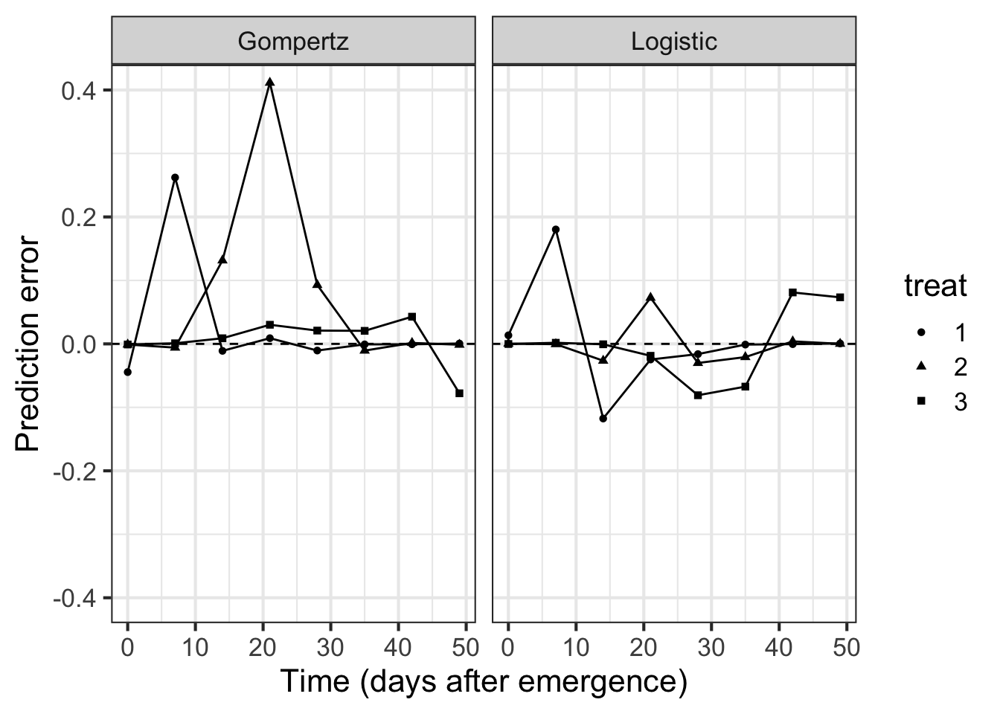

library(tidyverse) # essential packages
library(cowplot) # for themes
theme_set(theme_bw(base_size = 16)) # set global theme7 Model fitting
This is a work in progress that is currently undergoing heavy technical editing and copy-editing
In this tutorial, you will learn how to fit models to multiple actual disease progress curves (DPCs) data obtained from the literature. I will demonstrate how to fit and select the models using the epifitter package. A few user friendly functions will help us decide which model to choose to obtain the parameters of interest and further compare the epidemics.
To illustrate, I will use two datasets available from Chapter 3 from the book, Study of Plant Disease Epidemics (Madden et al. 2017). In the book, SAS codes are presented to perform a few analysis. We then provide an alternative code for performing similar analysis, although not perfectly reproducing the results from the book.
7.0.1 Non-replicated epidemics
We will compare three DPCs of the incidence of tobacco etch, a virus disease, in peppers. Evaluations of incidence were evaluated at a 7-day interval, up to 49 days.The data are available in chapter 4 (page 93). Let’s input the data manually and create a data frame. First column is the assessment time and the other columns correspond to the treatments, called groups in the book, from 1 to 3.
7.0.2 Entering data
pepper <-
tribble(
~t, ~`1`, ~`2`, ~`3`,
0, 0.08, 0.001, 0.001,
7, 0.13, 0.01, 0.001,
14, 0.78, 0.09, 0.01,
21, 0.92, 0.25, 0.05,
28, 0.99, 0.8, 0.18,
35, 0.995, 0.98, 0.34,
42, 0.999, 0.99, 0.48,
49, 0.999, 0.999, 0.74
) 7.0.3 Visualize the DPCs
Before proceeding with model selection and fitting, let’s visualize the three epidemics. The code below reproduces quite exactly the top plot of Fig. 4.15 ((Madden et al. 2017) page 94). The appraisal of the curves might give us a hint on which models are the best candidates.
Because the data was entered in the wide format (each DPCs in a different columns) we need to reshape it to the long format. The pivot_longer function will do the job of reshaping from wide to long format so we can finally use the ggplot function to produce the plot.
pepper |>
pivot_longer(2:4, names_to ="treat", values_to = "inc") |>
ggplot (aes(t, inc,
linetype = treat,
shape = treat,
group = treat))+
geom_line(size = 1)+
geom_point(size =3, shape = 16)+
annotate(geom = "text", x = 15, y = 0.84, label = "1")+
annotate(geom = "text", x = 23, y = 0.6, label = "2")+
annotate(geom = "text", x = 32, y = 0.33, label = "3")+
labs(y = "Disease incidence (y)",
x = "Time (days)")+
theme(legend.position = "none")
Most of the three curves show a sigmoid shape with the exception of group 3 that resembles an exponential growth, not reaching the maximum value, and thus suggesting an incomplete epidemic. We can easily eliminate the monomolecular and exponential models and decide on the other two non-flexible models: logistic or Gompertz. To do that, let’s proceed to model fitting and evaluate the statistics for supporting a final decision. There are two modeling approaches for model fitting in epifitter: the linear or nonlinear parameter-estimation methods.
7.0.4 Fitting: single epidemics
Among the several options offered by epifitter we start with the simplest one, which is fit a model to a single epidemics using the linear regression approach. For such, the fit_lin() requires two arguments: time (time) and disease intensity (y) each one as a vector stored or not in a dataframe.
Since we have three epidemics, fit_lin() will be use three times. The function produces a list object with six elements. Let’s first look at the Stats dataframe of each of the three lists named epi1 to epi3.
library(epifitter)
epi1 <- fit_lin(time = pepper$t,
y = pepper$`1` )
epi1$Stats CCC r_squared RSE
Gompertz 0.9848 0.9700 0.5911
Monomolecular 0.9838 0.9681 0.5432
Logistic 0.9782 0.9572 0.8236
Exponential 0.7839 0.6447 0.6705epi2 <- fit_lin(time = pepper$t,
y = pepper$`2` )
epi2$Stats CCC r_squared RSE
Logistic 0.9962 0.9924 0.4524
Gompertz 0.9707 0.9431 0.8408
Monomolecular 0.9248 0.8601 1.0684
Exponential 0.8971 0.8134 1.2016epi3 <- fit_lin(time = pepper$t,
y = pepper$`3` )
epi3$Stats CCC r_squared RSE
Logistic 0.9829 0.9665 0.6045
Gompertz 0.9825 0.9656 0.2263
Exponential 0.9636 0.9297 0.7706
Monomolecular 0.8592 0.7531 0.2534The statistics of the model fit confirms our initial guess that the predictions by the logistic or the Gompertz are closer to the observations than predictions by the other models. There is no much difference between them based on these statistics. However, to pick one of the models, it is important to inspect the curves with the observed and predicted values to check which model is best for all curves.
7.0.5 Fitting: multiple epidemics
Before looking at the prediction, let’s use another handy function that allows us to simultaneously fit the models to multiple DPC data. Different from fit_lin(), fit_multi() requires the data to be structured in the long format where there is a column specifying each of the epidemics.
Let’s then create a new data set called pepper2 using the data transposing functions of the tidyr package.
pepper2 <- pepper |>
pivot_longer(2:4, names_to ="treat", values_to = "inc")Now we fit the models to all DPCs. Note that the name of the variable indicating the DPC code needs to be informed in strata_cols argument.
epi_all <- fit_multi(
time_col = "t",
intensity_col = "inc",
data = pepper2,
strata_cols = "treat",
nlin = FALSE
)Now let’s select the statistics of model fitting. Again, Epifitter ranks the models based on the CCC (the higher the better) but it is important to check the RSE as well - the lower the better. In fact, the RSE is more important when the goal is prediction.
epi_all$Parameters |>
select(treat, model, best_model, RSE, CCC) treat model best_model RSE CCC
1 1 Gompertz 1 0.5911056 0.9847857
2 1 Monomolecular 2 0.5431977 0.9838044
3 1 Logistic 3 0.8235798 0.9781534
4 1 Exponential 4 0.6705085 0.7839381
5 2 Logistic 1 0.4523616 0.9961683
6 2 Gompertz 2 0.8407922 0.9707204
7 2 Monomolecular 3 1.0683633 0.9247793
8 2 Exponential 4 1.2015809 0.8971003
9 3 Logistic 1 0.6045243 0.9829434
10 3 Gompertz 2 0.2262550 0.9824935
11 3 Exponential 3 0.7705736 0.9635747
12 3 Monomolecular 4 0.2533763 0.8591837To be more certain about our decision, let’s advance to the final step which is to produce the plots with the observed and predicted values for each assessment time by calling the Data dataframe of the `epi_all list.
epi_all$Data |>
filter(model %in% c("Gompertz", "Logistic")) |>
ggplot(aes(time, predicted, shape = treat)) +
geom_point(aes(time, y)) +
geom_line() +
facet_wrap(~ model) +
coord_cartesian(ylim = c(0, 1)) + # set the max to 0.6
labs(
y = "Disease incidence",
x = "Time (days after emergence)"
)
Overall, the logistic model seems a better fit for all the curves. Let’s produce a plot with the prediction error versus time.
epi_all$Data |>
filter(model %in% c("Gompertz", "Logistic")) |>
ggplot(aes(time, predicted -y, shape = treat)) +
geom_point() +
geom_line() +
geom_hline(yintercept = 0, linetype =2)+
facet_wrap(~ model) +
coord_cartesian(ylim = c(-0.4, 0.4)) + # set the max to 0.6
labs(
y = "Prediction error",
x = "Time (days after emergence)"
)
The plots above confirms the logistic model as good fit overall because the errors for all epidemics combined are more scattered around the non-error line.
epi_all$Parameters |>
filter(model == "Logistic") |>
select(treat, y0, y0_ci_lwr, y0_ci_upr, r, r_ci_lwr, r_ci_upr
) treat y0 y0_ci_lwr y0_ci_upr r r_ci_lwr r_ci_upr
1 1 0.0935037690 0.0273207272 0.274728744 0.2104047 0.1659824 0.2548270
2 2 0.0013727579 0.0006723537 0.002800742 0.2784814 0.2540818 0.3028809
3 3 0.0008132926 0.0003131745 0.002110379 0.1752146 0.1426077 0.2078215We can produce a plot for visual inference on the differences in the parameters.
p1 <- epi_all$Parameters |>
filter(model == "Logistic") |>
ggplot(aes(treat, r)) +
geom_point(size = 3) +
geom_errorbar(aes(ymin = r_ci_lwr, ymax = r_ci_upr),
width = 0,
size = 1
) +
labs(
x = "Time",
y = "r"
)
p2 <- epi_all$Parameters |>
filter(model == "Logistic") |>
ggplot(aes(treat, 1 - exp(-y0))) +
geom_point(size = 3) +
geom_errorbar(aes(ymin = y0_ci_lwr, ymax = y0_ci_upr),
width = 0,
size = 1
) +
labs(
x = "Time",
y = "y0"
)
library(patchwork)
Attaching package: 'patchwork'The following object is masked from 'package:cowplot':
align_plotsp1 | p2
7.0.6 Designed experiments
In this next section, we will work with disease data collected over time in the same plot unit (also called repeated measures) from a designed experiment for evaluating and comparing treatment effects.
Again, we will use a dataset of progress curves shown in page 98 (Madden et al. 2017). The curves represent the incidence of soybean plants symptomatic for bud blight caused by tobacco streak virus. Four treatments (different planting dates) were evaluated in randomized complete block design with four replicates. There are four assessment in time for each curve. The data was stored as a csv file and will be loaded using read_csv() function and stored as dataframe called budblight.
7.0.6.1 Loading data
budblight <- read_csv("https://raw.githubusercontent.com/emdelponte/epidemiology-R/main/data/bud-blight-soybean.csv")
── Column specification ────────────────────────────────────────────────────────
cols(
treat = col_character(),
time = col_double(),
block = col_double(),
y = col_double()
)Let’s have a look at the first six rows of the dataset and check the data type for each column. There is an additional column representing the replicates, called block.
head(budblight)# A tibble: 6 × 4
treat time block y
<chr> <dbl> <dbl> <dbl>
1 PD1 30 1 0.1
2 PD1 30 2 0.3
3 PD1 30 3 0.1
4 PD1 30 4 0.1
5 PD1 40 1 0.3
6 PD1 40 2 0.387.0.6.2 Visualizing the DPCs
Let’s have a look at the curves and produce a combo plot figure similar to Fig. 4.17 of the book, but without the line of the predicted values.
p3 <- budblight |>
ggplot(aes(
time, y,
group = block,
shape = factor(block)
)) +
geom_point(size = 1.5) +
ylim(0, 0.6) +
theme(legend.position = "none")+
facet_wrap(~treat, ncol =1)+
labs(y = "Disease incidence",
x = "Time (days after emergence)")p4 <- budblight |>
ggplot(aes(
time, log(1 / (1 - y)),
group = block,
shape = factor(block)
)) +
geom_point(size = 2) +
facet_wrap(~treat, ncol = 1) +
theme(legend.position = "none")+
labs(y = "Transformed incidence", x = "Time (days after emergence)")
p3 | p4
7.0.6.3 Model fitting
Remember that the first step in model selection is the visual appraisal of the curve data linearized with the model transformation. In the case the curves represent complete epidemics (close to 100%) appraisal of the absolute rate (difference in y between two times) over time is also helpful.
For the treatments above, it looks like the curves are typical of a monocyclic disease (the case of soybean bud blight), for which the monomolecular is usually a good fit, but other models are also possible as well. For this exercise, we will use both the linear and the nonlinear estimation method.
7.0.6.3.1 Linear regression
For convenience, we use the fit_multi() to handle multiple epidemics. The function returns a list object where a series of statistics are provided to aid in model selection and parameter estimation. We need to provide the names of columns (arguments): assessment time (time_col), disease incidence (intensity_col), and treatment (strata_cols).
lin1 <- fit_multi(
time_col = "time",
intensity_col = "y",
data = budblight,
strata_cols = "treat",
nlin = FALSE
)Let’s look at how well the four models fitted the data. Epifitter suggests the best fitted model (1 to 4, where 1 is best) for each treatment. Let’s have a look at the statistics of model fitting.
lin1$Parameters |>
select(treat, best_model, model, CCC, RSE) treat best_model model CCC RSE
1 PD1 1 Monomolecular 0.9348429 0.09805661
2 PD1 2 Gompertz 0.9040182 0.22226189
3 PD1 3 Logistic 0.8711178 0.44751963
4 PD1 4 Exponential 0.8278055 0.36124036
5 PD2 1 Monomolecular 0.9547434 0.07003116
6 PD2 2 Gompertz 0.9307192 0.17938711
7 PD2 3 Logistic 0.9062012 0.38773023
8 PD2 4 Exponential 0.8796705 0.32676216
9 PD3 1 Monomolecular 0.9393356 0.06832499
10 PD3 2 Gompertz 0.9288436 0.17156394
11 PD3 3 Logistic 0.9085414 0.39051075
12 PD3 4 Exponential 0.8896173 0.33884790
13 PD4 1 Gompertz 0.9234736 0.17474422
14 PD4 2 Monomolecular 0.8945962 0.06486949
15 PD4 3 Logistic 0.8911344 0.52412586
16 PD4 4 Exponential 0.8739618 0.49769642And now we extract values for each parameter estimated from the fit of the monomolecular model.
lin1$Parameters |>
filter(model == "Monomolecular") |>
select(treat, y0, r) treat y0 r
1 PD1 -0.5727700 0.02197351
2 PD2 -0.5220593 0.01902952
3 PD3 -0.4491365 0.01590586
4 PD4 -0.3619898 0.01118047Now we visualize the fit of the monomolecular model (using filter function - see below) to the data together with the observed data and then reproduce the right plots in Fig. 4.17 from the book.
lin1$Data |>
filter(model == "Monomolecular") |>
ggplot(aes(time, predicted)) +
geom_point(aes(time, y)) +
geom_line(size = 0.5) +
facet_wrap(~treat) +
coord_cartesian(ylim = c(0, 0.6)) + # set the max to 0.6
labs(
y = "Disease incidence",
x = "Time (days after emergence)"
)
Now we can plot the means and respective 95% confidence interval of the apparent infection rate (\(r\)) and initial inoculum (\(y_0\)) for visual inference.
p5 <- lin1$Parameters |>
filter(model == "Monomolecular") |>
ggplot(aes(treat, r)) +
geom_point(size = 3) +
geom_errorbar(aes(ymin = r_ci_lwr, ymax = r_ci_upr),
width = 0,
size = 1
) +
labs(
x = "Time",
y = "r"
)
p6 <- lin1$Parameters |>
filter(model == "Monomolecular") |>
ggplot(aes(treat, 1 - exp(-y0))) +
geom_point(size = 3) +
geom_errorbar(aes(ymin = y0_ci_lwr, ymax = y0_ci_upr),
width = 0,
size = 1
) +
labs(
x = "Time",
y = "y0"
)
p5 | p2
7.0.6.3.2 Non-linear regression
To estimate the parameters using the non-linear approach, we repeat the same arguments in the fit_multi function, but include an additional argument nlin set to TRUE.
nlin1 <- fit_multi(
time_col = "time",
intensity_col = "y",
data = budblight,
strata_cols = "treat",
nlin = TRUE
)Warning in log(y0/1): NaNs produced
Warning in log(y0/1): NaNs produced
Warning in log(y0/1): NaNs producedLet’s check statistics of model fit.
nlin1$Parameters |>
select(treat, model, CCC, RSE, best_model) treat model CCC RSE best_model
1 PD1 Monomolecular 0.9382991 0.06133704 1
2 PD1 Gompertz 0.9172407 0.06986307 2
3 PD1 Logistic 0.8957351 0.07700720 3
4 PD1 Exponential 0.8544194 0.08799512 4
5 PD2 Monomolecular 0.9667886 0.04209339 1
6 PD2 Gompertz 0.9348370 0.05726761 2
7 PD2 Logistic 0.9077857 0.06657793 3
8 PD2 Exponential 0.8702365 0.07667322 4
9 PD3 Monomolecular 0.9570853 0.04269129 1
10 PD3 Gompertz 0.9261609 0.05443852 2
11 PD3 Logistic 0.8997106 0.06203037 3
12 PD3 Exponential 0.8703443 0.06891021 4
13 PD4 Monomolecular 0.9178226 0.04595409 1
14 PD4 Gompertz 0.9085579 0.04791331 2
15 PD4 Logistic 0.8940731 0.05083336 3
16 PD4 Exponential 0.8842437 0.05267415 4And now we obtain the two parameters of interest. Note that the values are not the sames as those estimated using linear regression, but they are similar and highly correlated.
nlin1$Parameters |>
filter(model == "Monomolecular") |>
select(treat, y0, r) treat y0 r
1 PD1 -0.7072562 0.02381573
2 PD2 -0.6335713 0.02064629
3 PD3 -0.5048763 0.01674209
4 PD4 -0.3501234 0.01094368p7 <- nlin1$Parameters |>
filter(model == "Monomolecular") |>
ggplot(aes(treat, r)) +
geom_point(size = 3) +
geom_errorbar(aes(ymin = r_ci_lwr, ymax = r_ci_upr),
width = 0,
size = 1
) +
labs(
x = "Time",
y = "r"
)
p8 <- nlin1$Parameters |>
filter(model == "Monomolecular") |>
ggplot(aes(treat, y0)) +
geom_point(size = 3) +
geom_errorbar(aes(ymin = y0_ci_lwr, ymax = y0_ci_upr),
width = 0,
size = 1
) +
labs(
x = "Time",
y = "y0"
)
p7 | p8